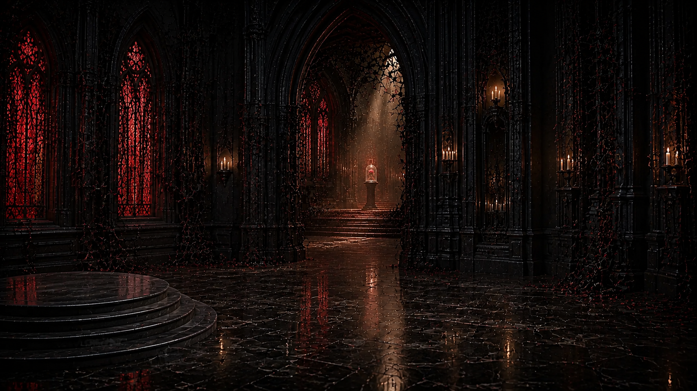
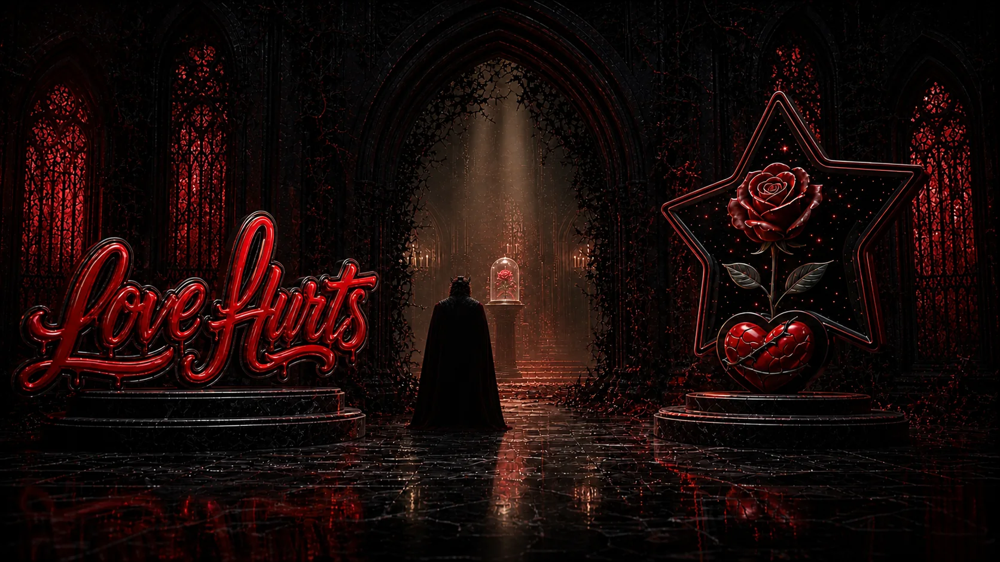

01
LH-COMMERCE-2-HERO-ENVIRONMENT-B1
Love Hurts / The Rose Side Chapel

An adjoining Gothic side chapel, with crimson windows, thorned arches and the distant glass-covered rose.
Compare original hero reference

Candidate identity and import path
/Users/theceo/.codex/worktrees/stage-06-lh-commerce-2/DevSkyy/Comfy/quarantine/LH-COMMERCE-2/LH-COMMERCE-2-HERO-ENVIRONMENT-B1.png
SHA-256 1679ab9b90d53316c6d14ec936f953ae5135857393c5bd1f16623de30d5da2f8